Model name: adm_13.h (WITH THRESHOLD OUTPUT CLASSIFICATION 0.2)
Model type: MLP
Model description: 60x32x32x32x2 MLP to detect based on the previous 20 points from 3 panels, and predict the next point on panel 1. Tested on previously unseen data.
Model data size: NA
Test results:
Accuracy on NO anomalies (0): 0.9937
Accuracy on ANOMALIES (1): 0.9168
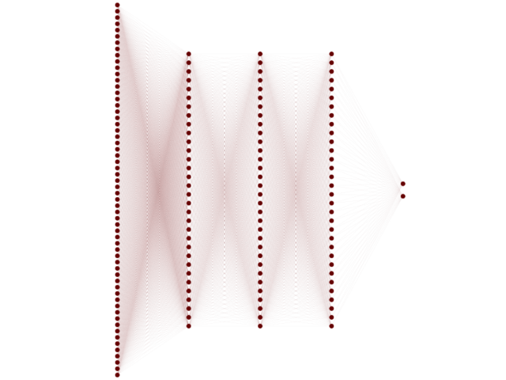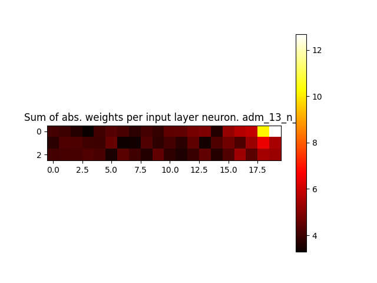
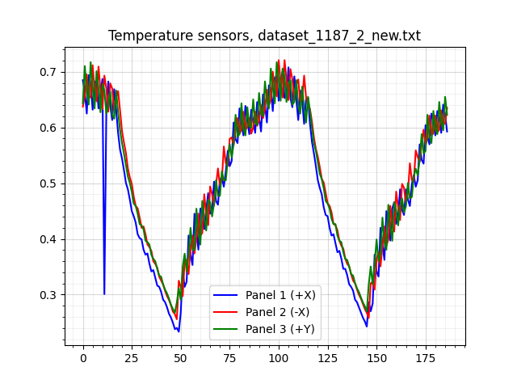
Figure 1: model inferences on dataset_1187_2_new.txt_sens.pngFigure 2: model inferences on dataset_1187_15_new.txt_sens.png
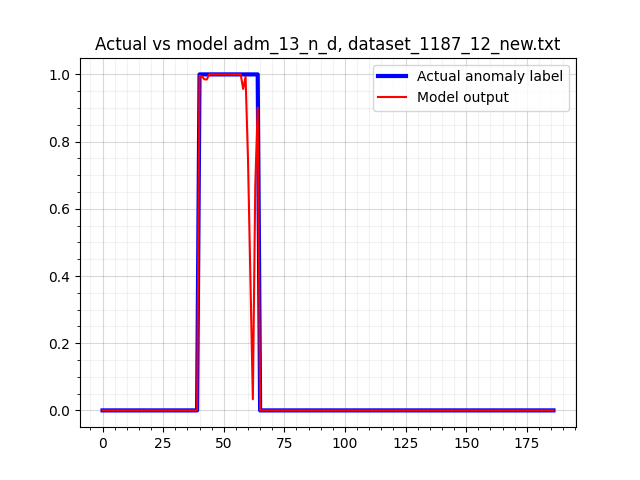
Figure 3: model inferences on dataset_1187_12_new.txt_sens.pngFigure 4: model inferences on dataset_1187_5_new.txt_sens.png
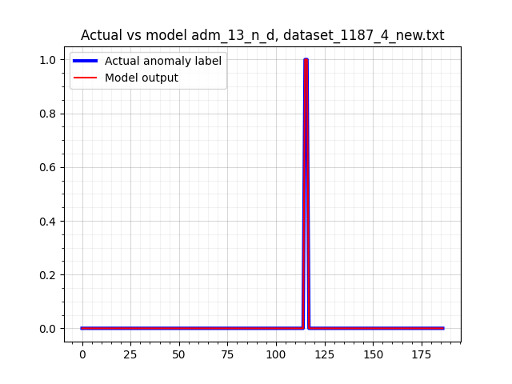
Figure 5: model inferences on dataset_1187_4_new.txt_sens.png
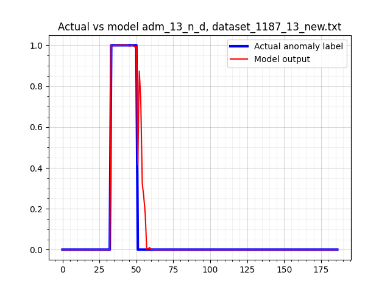
Figure 6: model inferences on dataset_1187_13_new.txt_sens.png
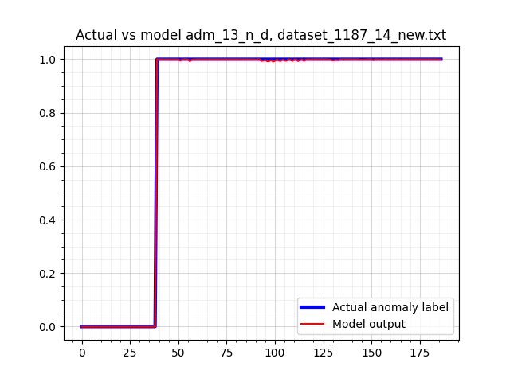
Figure 7: model inferences on dataset_1187_14_new.txt_sens.png
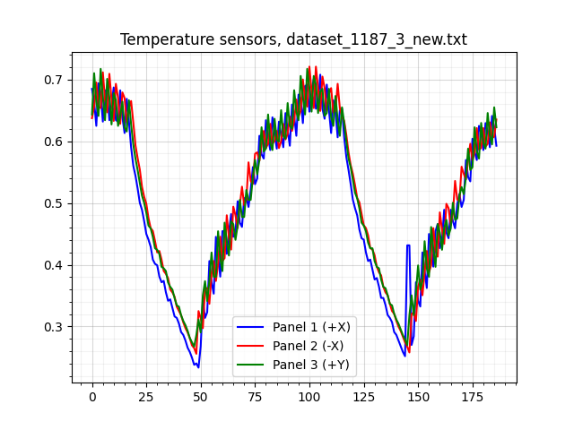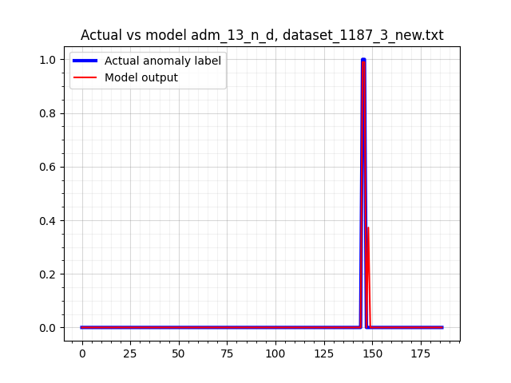
Figure 8: model inferences on dataset_1187_3_new.txt_sens.png
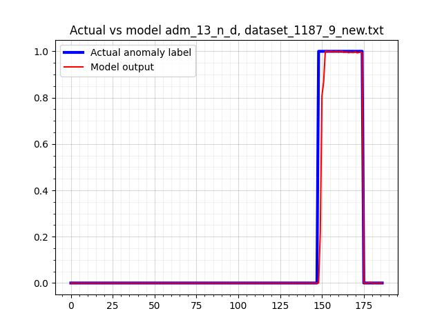
Figure 9: model inferences on dataset_1187_9_new.txt_sens.png
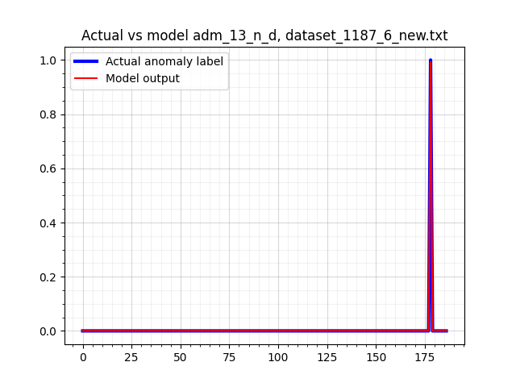
Figure 10: model inferences on dataset_1187_6_new.txt_sens.pngFigure 11: model inferences on dataset_1187_11_new.txt_sens.png
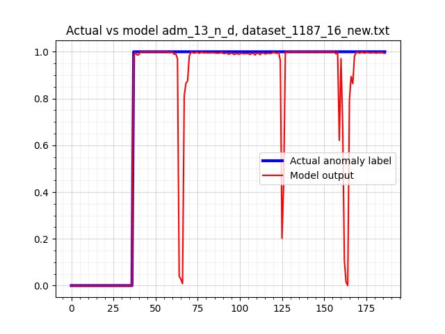
Figure 12: model inferences on dataset_1187_16_new.txt_sens.png
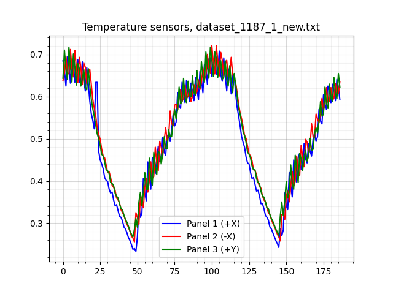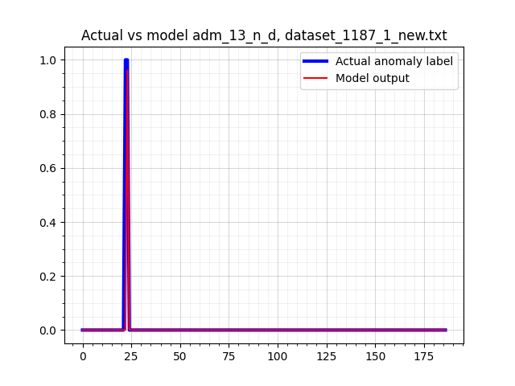
Figure 13: model inferences on dataset_1187_1_new.txt_sens.png
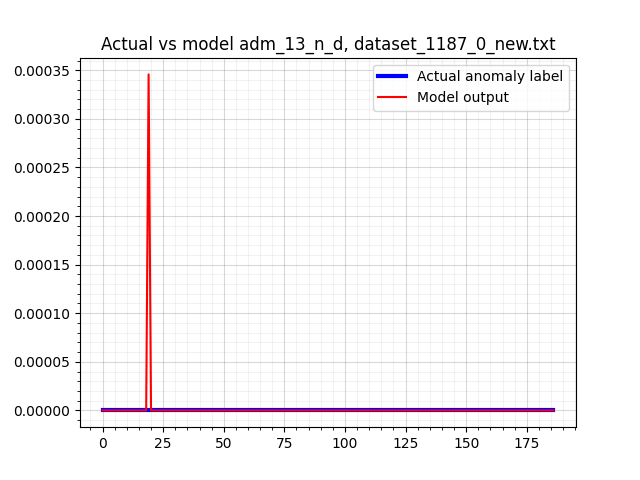
Figure 14: model inferences on dataset_1187_0_new.txt_sens.pngFigure 15: model inferences on dataset_1187_8_new.txt_sens.png
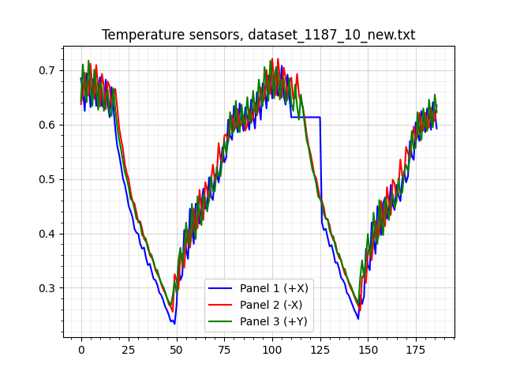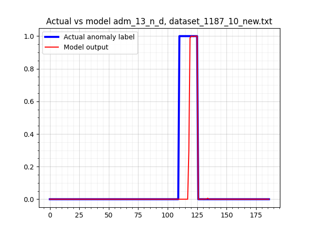
Figure 16: model inferences on dataset_1187_10_new.txt_sens.png
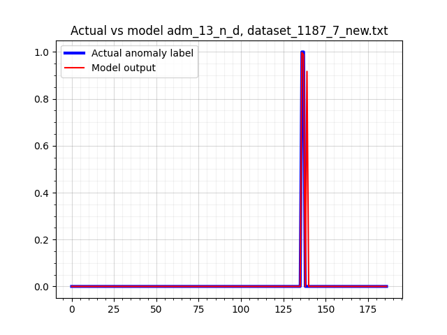
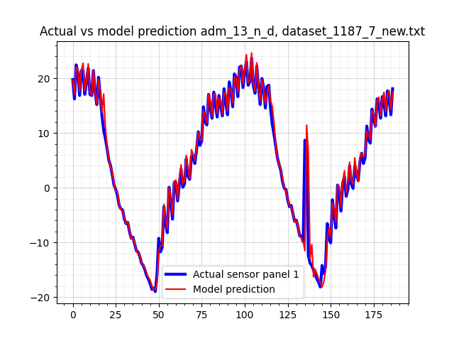
Figure 17: model inferences on dataset_1187_7_new.txt_sens.png

 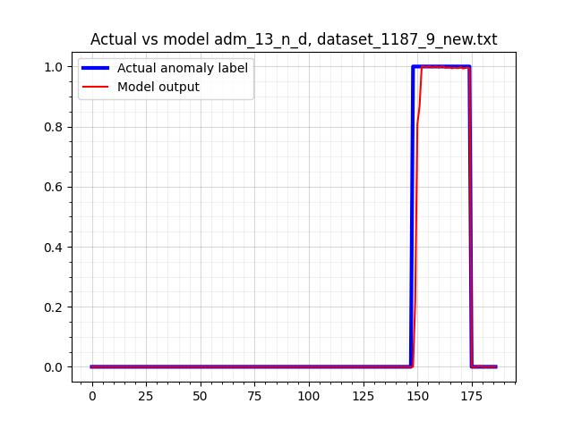
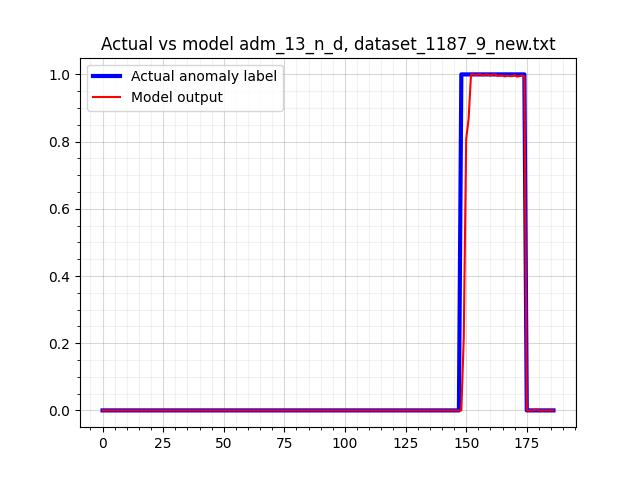 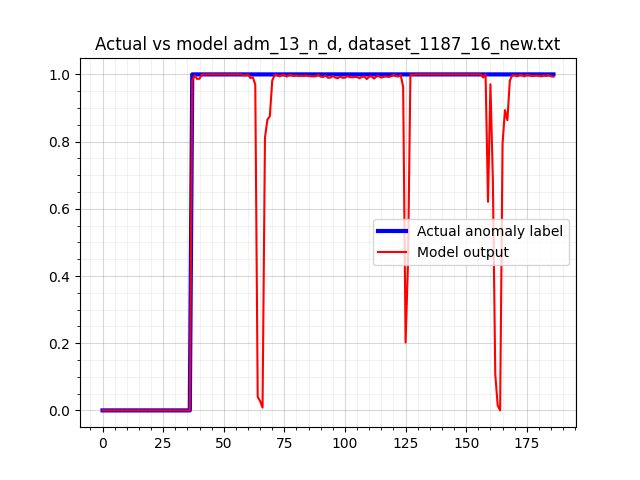
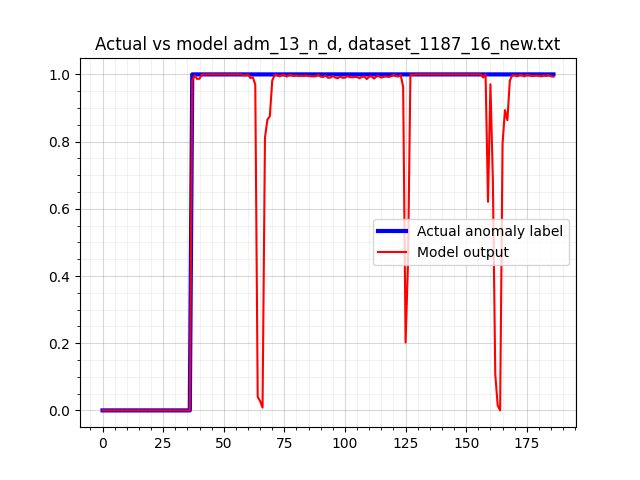